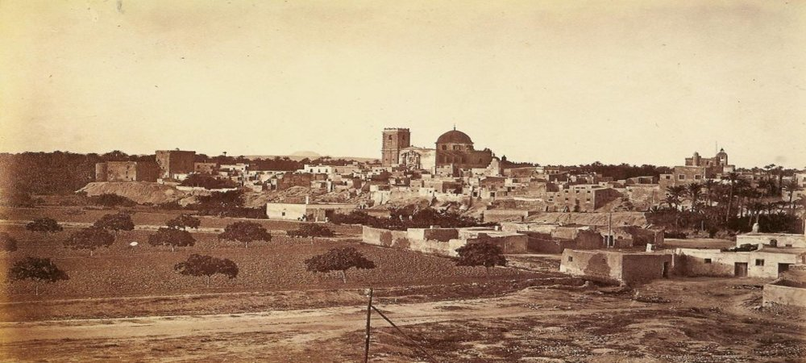
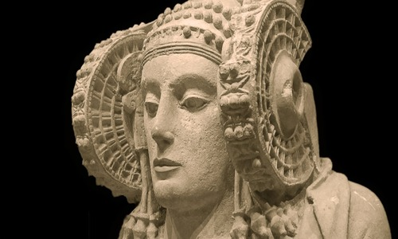

The history of Elche begins in the 5th century BC. When the Iberian city of Helike was founded. The Carthaginians destroyed it and it was rebuilt by the Romans, renamed Colonia Iulia Illici Augusta. In the Middle Ages, under the rule of the Muslims, The city that would be called Alcudia (currently where the archaeological site is located) is moved to a lower and flat area called Vila Murada (where Elche is currently located). In 1265, after the Muslim domination, it was taken by Jaime I the Conqueror and became part of the Crown of Castile. After 55 years, it was ceded to the Kingdom of Valencia. Already in 1871, the monarch Amadeo I gave it the title of City, ceasing to be a town. But it was not until the 60-70s of the twentieth century that a large increase in population due to industrialization. It would become one of the main cities in Europe in the production of footwear.

But what must be highlighted in the history of Elche is the great discovery of the Lady of Elche. At the end of the 19th century, it was found while carrying out agricultural tasks in Alcudia. It is an Iberian bust from the 4th century BC. carved in limestone, in it you can see the representation of a woman who wears 3 garments: a tunic, a toga and a cloak. Today it is in the National Archaeological Museum, after its stay in the Louvre Museum and in the Prado Museum.
